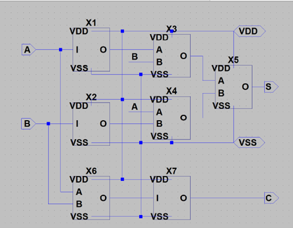
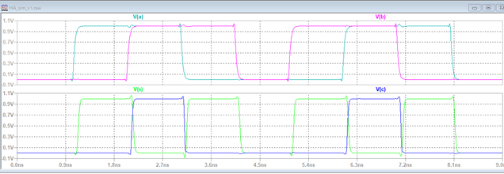

半加算器の設計
半加算器を設計します。半加算器は、2つの入力 AとBに対して、和(S)と桁上げ(C)の2つの出力を生成する基本的な論理回路です。
1. 半加算器の基本動作
半加算器は、以下の2つの論理演算に基づいて出力を生成します:
- 和(S = A + B): 排他的論理和(XOR)によって、入力AとBが異なる場合にSが1になります。
- 桁上げ(C = A • B): 論理積(AND)によって、AとBが両方とも1のときにCが1になります。
2.真理値表

この真理値表に基づき、和(S)と桁上げ(C)を得るための回路を設計します。
3. 半加算器の構成
テキストでは、INVと2NANDのみを使用して半加算器を構成しています。今回の設計例はあくまで一例であり、他の回路構成も可能です。使用するゲートの制限内で、遅延を最小化する工夫が必要です。
- INV ゲート(インバータ)で信号を反転させます。
- 2NAND ゲート(2入力 NAND ゲート)で XORや AND の動作を実現します。
4. 半加算器の回路図
以下に、INV と 2NAND を使って半加算器を構成する一例の回路図を提示します。
- XORの実現: 2NAND ゲートでXOR 回路を作成します。
- AND の実現: 2NAND ゲートでAND 回路を作成します。
これを参考に、入力A、Bから出力S、Cを得る回路を構成しますが、最適な回路設計には他のアプローチも考慮できます。
半加算器の設計コンテスト
実習3では、設計した半加算器の伝搬遅延時間を評価し、その結果を基に設計コンテストを行います。このコンテストでは、半加算器の伝搬遅延時間を最小化するために工夫された設計が求められ、異なる負荷条件での回路動作が競われます。
1. コンテストの前提条件
前回のインバータと同様に、作成したインバータ、2NAND、およびシンボルがすべて同じフォルダに保存されていることが必要です。このフォルダ構成が正しくない場合、シミュレーションが正しく動作しない可能性があります。必ず、これらのファイルがすべて「LTspice 実習ファイル」内に存在していることを確認してください。
2. 半加算器のシンボルの作成
まず、半加算器のシンボルの中身を作成します。テキストでは、INV と 2NAND で構成されているため、これらを使用して回路を作成します。作成された回路が正しく動作することを確認してください。
回路の保存
回路が完成したら、「HA_sch」という名前で必ず保存してください。保存先は「LTspice 実習フォルダ」です。
シミュレーションファイルの実行
「LTspice 実習ファイル」には、以下の3つのシミュレーションファイルが存在しています:
- HA_sim_x1.asc
- HA_sim_x64.asc
- HA_sim_x256.asc
これらのファイルの中から、いずれか1つを選択し、実行してください。実行するファイルは負荷条件に応じて変わります(x1 は軽負荷、x256 は重負荷)。
実行結果の確認
シミュレーションの結果として、A、B、S、Cの4つの波形が表示されます。テキストではクロック信号もプロービングされていますが、ここではA、B、S、Cの波形があれば十分です。
波形の表示
シミュレーションの結果として、上段にA、Bの入力信号、下段にS、Cの出力信号が表示されます。この波形が理論値通りに動作していれば、設計は成功です。
コンテストの目的と負荷条件
半加算器の設計において、伝搬遅延時間を最小限に抑えることが主要な目標です。伝搬遅延時間が短いほど、回路が高速に動作するため、効率的な設計が高く評価されます。コンテストでは、以下の3つの負荷条件で回路が評価されます。
- ライト級: Cout = 1
- ミドル級: Cout = 64
- ヘビー級: Cout = 256
シミュレーションの実行と伝搬遅延時間の計測
各負荷条件における半加算器の動作を確認するために、シミュレーションファイル(HA_sim_x1, HA_sim_x64, HA_sim_x256)を使用します。以下のステップでシミュレーションを実行し、結果を確認します。

1. シミュレーション設定の確認
各負荷条件に対応するシミュレーションファイルを開き、適切な解析設定が行われていることを確認します。
2. 伝搬遅延時間の計測
シミュレーション結果から、入力信号(A、B)の遷移に対する出力信号(S、C)の応答を確認し、各負荷条件での遅延時間を計測します。
評価基準
コンテストでは、以下の基準で設計が評価されます。
- 伝搬遅延時間の短さ: 回路の動作が速いほど高評価となります。特に、ヘビー級(Cout = 256)での遅延をいかに最小化できるかが重要です。
- 設計の工夫: ゲートの配置やトランジスタサイズの調整など、効率的な設計が評価されます。
シミュレーションコマンドの意味と結果の確認
ここでは、シミュレーションのコマンドが持つ意味を説明します。コマンドの内容を理解しないと、シミュレーション結果のどこに注目すれば良いのかが分かりません。テキストでは「ワードパッドで確認する」と記載されていますが、View → SPICE Error Log から結果を表示できます。
.meas tran tpd_sr_00_01 trig V(clk) val=0.5 rise=1 targ V(s) val=0.5 rise=1
.meas tran tpd_sf_01_11 trig V(clk) val=0.5 rise=2 targ V(s) val=0.5 fall=1
.meas tran tpd_sr_11_10 trig V(clk) val=0.5 rise=3 targ V(s) val=0.5 rise=2
.meas tran tpd_sf_10_00 trig V(clk) val=0.5 rise=4 targ V(s) val=0.5 fall=2
.meas tran tpd_sr_00_10 trig V(clk) val=0.5 rise=5 targ V(s) val=0.5 rise=3
.meas tran tpd_sf_10_11 trig V(clk) val=0.5 rise=6 targ V(s) val=0.5 fall=3
.meas tran tpd_sr_11_01 trig V(clk) val=0.5 rise=7 targ V(s) val=0.5 rise=4
.meas tran tpd_sf_01_00 trig V(clk) val=0.5 rise=8 targ V(s) val=0.5 fall=4
.meas tran tpd_cr_01_11 trig V(clk) val=0.5 rise=2 targ V(c) val=0.5 rise=1
.meas tran tpd_cf_11_10 trig V(clk) val=0.5 rise=3 targ V(c) val=0.5 fall=1
.meas tran tpd_cr_10_11 trig V(clk) val=0.5 rise=6 targ V(c) val=0.5 rise=2
.meas tran tpd_cf_11_01 trig V(clk) val=0.5 rise=7 targ V(c) val=0.5 fall=2以下は、半加算器の遅延時間に関する各コマンドの説明です。
- tpd_sr_00_01: クロックが 0.5Vになる最初の立ち上がりの時点から、出力Sが0.5Vになる最初の立ち上がりまでの時間。
- tpd_sf_01_11: クロックが 0.5Vになる2回目の立ち上がりの時点から、出力Sが0.5Vになる最初の立ち下がりまでの時間。
- tpd_sr_11_10: クロックが 0.5V になる3回目の立ち上がりの時点から、出力 S が 0.5V になる2回目の立ち上がりまでの時間。
- tpd_sf_10_00: クロックが 0.5Vになる4回目の立ち上がりの時点から、出力Sが0.5V になる2回目の立ち下がりまでの時間。
- tpd_sr_00_10: クロックが 0.5Vになる5回目の立ち上がりの時点から、出力Sが0.5V になる3回目の立ち上がりまでの時間。
- tpd_sf_10_11: クロックが 0.5V になる6回目の立ち上がりの時点から、出力Sが0.5V になる3回目の立ち下がりまでの時間。
- tpd_sr_11_01: クロックが 0.5Vになる7回目の立ち上がりの時点から、出力Sが0.5V になる4回目の立ち上がりまでの時間。
- tpd_sf_01_00: クロックが 0.5Vになる8回目の立ち上がりの時点から、出力Sが0.5V になる4回目の立ち下がりまでの時間。
- tpd_cr_01_11: クロックが 0.5Vになる2回目の立ち上がりの時点から、出力Cが0.5Vになる最初の立ち上がりまでの時間。
- tpd_cf_11_10: クロックが 0.5V になる3回目の立ち上がりの時点から、出力 C が 0.5V になる最初の立ち下がりまでの時間。
- tpd_cr_10_11: クロックが 0.5Vになる6回目の立ち上がりの時点から、出力Cが0.5V になる2回目の立ち上がりまでの時間。
- tpd_cf_11_01: クロックが 0.5Vになる7回目の立ち上がりの時点から、出力Cが0.5V になる2回目の立ち下がりまでの時間。